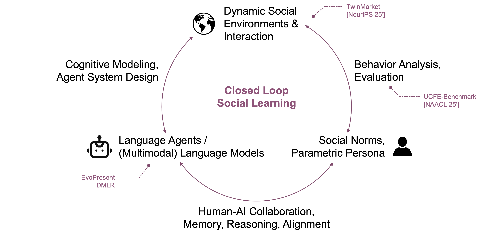

Human-AI interaction, Socially Aware NLP, and Future Research Directions
In my early research journey, I was thinking about how machine intelligence could learn from data to predict real-world patterns. This led me to my first research project, in which I sought to train a model to capture the spatio-temporal correlation of delay and model its propagation process within airport networks [1]. At the same time, Large Language Models (LLMs) emerged, demonstrating superior performance by learning from tremendous data, which led me to realize that language serves as a inherently more natural medium for encapsulating human knowledge, reasoning, and interaction. This insight suggests that language technologies act as a bridge to a deeper understanding of humanity itself. This conviction led my subsequent research to focus on Human-AI Interaction and Socially Aware NLP.
My first exploration began with training a financial multimodal LLM [2]. When integrating the model into real human-AI workflows, we identified a critical gap: while the model excelled in static benchmarks, strict accuracy metrics failed to capture the reasoning and coordination capabilities required for dynamic interaction. This discrepancy led me to think that assessing intelligence requires observing how models behave and adapt during interaction, and that LLMs should ultimately learn from these dynamics. To quantify these missing capabilities, I developed a multi-turn, role-playing benchmark in which the LLM alternates between the roles between a domain expert and an assistant. This work was accepted to Findings of NAACL 2025 [3]. Building on this perspective, I subsequently explored how agents might learn directly from interaction. For the EvoPresent Agent [4], I leveraged limited human preference data to train a vision-language model via reinforcement learning, equipping it with human-like aesthetic judgment. I then integrated this model into a self-improving loop that mimics human feedback dynamics. This mechanism allows the agent to iteratively critique, revise, and refine presentation slides, closely mirroring the human creative process.
While dynamic interaction improves model behavior, I argue that this is only the first step: to build truly human-like collaborators, we must also look inward to explore what the structure of the human mind can teach us about designing internal mechanisms of language models. In this line of work, I focus on abstracting structural principles from human cognition and translating them into new modeling paradigms. For example, in complex visual reasoning, humans do not process information linearly; they engage in a dynamic interplay between perception and reasoning, revisiting visual stimuli when uncertainty arises. Inspired by this cognitive pattern, DMLR [5] introduces a novel reasoning paradigm that interleaves perceptual steps directly into the latent space. By replacing rigid, sequential processing with this dynamic integration, the model effectively mimics human attention shifts and significantly reduces hallucinations. Similarly, SAE-free [6] takes inspiration from how humans reason using both abstract symbols and natural language. We utilized these symbolic and verbal representations as anchors to disentangle reasoning-specific features from the model's activations. This approach enables targeted steering of the model's internal states, thereby significantly boosting its reasoning performance. This work was accepted to EMNLP 2025.
I aim to further explore the social intelligence of LLMs and build foundation social agents capable of understanding, adapting, and behaving intelligently within complex human-centered environments. My research vision consists of two complementary directions: 1. At the micro level, I plan to investigate how LLM agents can learn and adapt through interaction. This involves designing learning algorithms that allow agents to continuously update their internal strategies, reason under uncertainty, and exhibit human-like decision-making in dynamic social contexts. 2. At the macro level, I aim to build interactive agent societies that allow us to study coordination, cooperation, and competition at scale. In such multi-agent environments, we can observe how agents negotiate, form strategies, develop norms, and adapt to the behavior of others. By scaling the complexity of the social environment, I hope to create simulation frameworks in which agents not only interact, but actually learn from the social dynamics themselves.

Socially Aware NLP
Moving beyond the internal cognitive structures of individual agents, my research scope extends to the collective dynamics that emerge when these agents interact. Language forms the most fundamental connections between individuals, and these connections, reinforced through continuous communication and interaction, ultimately give rise to the society we inhabit. Driven by these connections, these interactions among individuals accumulate and eventually manifest as macro-level collective patterns and emergent phenomena. As the foundational capabilities of LLMs continue to strengthen, their performance in role-playing, modeling human decision-making, and participating in social contexts has become increasingly credible. However, this also introduces new challenges: emergent social dynamics in the real world are difficult to observe directly, and we lack a controllable, high-fidelity setting to systematically study how micro-level decisions can generate macro-level social outcomes. Motivated by this gap, my subsequent work on TwinMarket [7] builds a controllable and scalable financial market environment in which LLM agents can engage in realistic trading, interaction, and strategic adaptation, enabling us to observe emergent social patterns arising from the accumulation of individual behaviors. TwinMarket successfully reproduced emergent market dynamics like bubbles and crashes and have garnered significant attentions from community. This work was accepted to NeurIPS 2025 and received the Best Paper Award at the ICLR 2025 Financial AI Workshop.